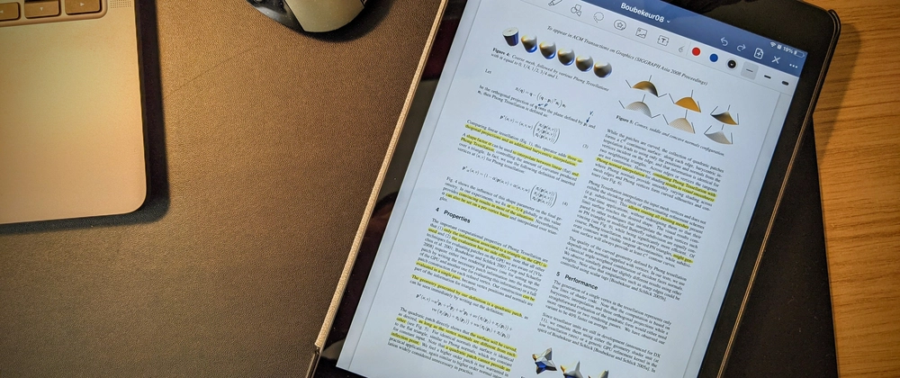
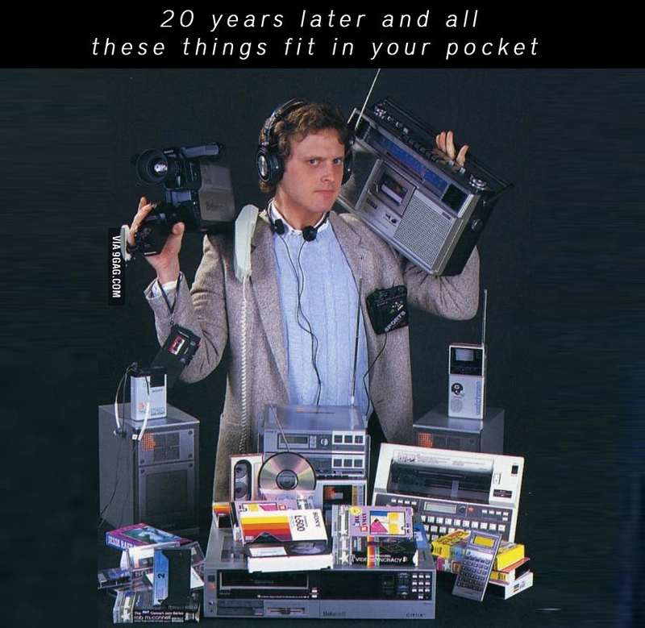

📅 21-Aug-2021
Article first published in Dev.to
My best daily dev tool

I like to travel and work light. When I’m choosing tools, languages or frameworks, I like to be able to work with minimal setups. The less things I need to use or learn, the better.
And that’s why my favourite tool that I use on a day to day basis is my tablet. It allows me to merge a lot of other things into a single device that I can carry around and takes almost no space.

📓 Notebook
This is most basic tool for any programmer. Period.
If you are not taking notes of everything already I don’t know
what are you waiting for, go get yourself a cheap notebook and a pen
right now.
But if you’re looking for a cleaner and more flexible alternative, a tablet + pen combo is the best. It can do all a regular notebook can + allowing you to organise, clean up and backup your notes (and you can also use multiple colours, add pics, etc).
I personally use GoodNotes, and I really like the fact that it also has a desktop app.
🖊 Whiteboard
Sadly, with whiteboards size matters, but it’s still very useful to make quick diagrams and schemes, while being able to erase and/or modify them, use multiple colour markers, etc.
There are also apps that allow you to share and present the whiteboard with others, so you can still have the whiteboard collaborative experience.
Definitely a great feature during this last year and probably a must for any remote programmer.
📚 eBook
As programmers, we always strive for expanding our knowledge.
That means that we read a lot, and we can end up with a lot of books that we might need to consult. But carry them around just in case is not viable. Unless you have them digitalised.
I still prefer paper books though, specially for technical books. I
simply enjoy reading them more, and I like seeing my little library
growing.
However this is all about optimising and convenience. And for that
there’s simply nothing better than having your books accessible from
anywhere, all in one (digital) place. That’s why nowadays I consider my
paper books more like collection items or a treat.
It also makes searching for specific stuff much faster and eBook versions of books tend to be much much cheaper.
📝 BONUS: Annotating papers
I guess this could go with the eBook, but papers are normally PDFs,
so you’re not really replacing anything.
In my line of work, it’s not unusual to read research papers fairly
often, and being able to take notes directly over them makes it much
more convenient and enjoyable.
Before having my iPad I used to print the ones I was more interested on. So I guess it’s also a good move for the environment. 🍃
Conclusion
I use a relatively old iPad with a 1st gen Apple pencil, but obviously you don’t need to get into the (expensive) Apple ecosystem. Any tablet compatible with a digital pen would work just as good (if not better).
If I were to buy one right now I would probably consider getting an e-ink device (the recently announced PineNote looks promising. You give up colours, but they are generally cheaper and better for your eyes and they have less distractions such as games, social media apps, streaming services, etc.
At the end of the day the best tool is the one you take the most value from, and I use my iPad constantly both for my work as for my personal projects.
So if you’re looking for a tool to improve your development experience and productivity, before you spend money on a fancy keyboard, laptop, IDE license, etc; consider getting one of these.